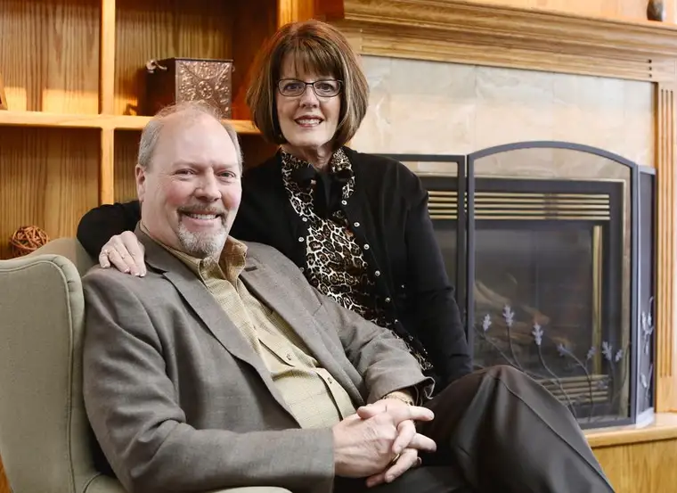

FARGO — If someone had suggested to John and Debbie Trombley 40 years ago that someday they’d be leading workshops on dating and marriage, they’d have laughed.
“Going 100 miles an hour with your hair on fire,” John says, describing those long-ago days.
“And bugs in your teeth — how exciting,” Debbie adds wryly. “We’ve changed a little since then. But just a little.”
Enough to have learned a thing or two about how to avoid the pitfalls of relationships, and developed a passion to share that wisdom with others.
Those attending the couple’s “How to Avoid Falling for a Jerk(ette)” workshops might assume the Trombleys have always been wise in the marriage realm. But each entered their marriage with a fair amount of brokenness in their wake.
Participants take part in a recent “How to Avoid Marrying a Jerk” workshop led by the Trombleys.
In college, John became an unwed father, and Debbie, wanting to flee a tumultuous childhood that included sexual abuse by her stepfather, married young, early and unwisely, stepping into more abuse. “I was desperate to escape, to be accepted and loved,” she says.
Seven years later, “crushed” and “very broken,” she found herself a single mother of two sons. “People attract the brokenness that they are in until they get healed,” she says, “until God does the work to restore.”
When the two met and married, they still had much to learn, but were determined divorce wouldn’t be an option, Debbie says, “out of desperation not to be hurt anymore.”
And so began a journey that led to a spiritual conversion that eventually catapulted them toward guiding others.
It started with teaching adult Sunday-school classes for married couples, and later, to involvement in Marriage Ministries International, through which they became equipped to teach others to lead a 14-week marriage course.
In time, they developed a hunger to reach people before marriage, Debbie says, to help them “not just go crazy about planning a wedding and then dealing with a disaster in the aftermath.”
Enter the teachings of John Van Epp, president and founder of Love Thinks, a program dedicated to building and strengthening relationships before and after marriage.
His “How to Avoid Marrying a Jerk” course has expanded into the program the Trombleys have brought to the area that focuses primarily on pre-marriage skills.
Through it, the Trombleys say, they’ve watched lives “shift and change right before our eyes.”
It’s based on a simple, proven way to understand and foster healthy relationships known as the Relationship Attachment Model (RAM).
RAM incorporates five “bonding forces” that have a progressive nature: know, trust, rely, commit and touch.
“All of these work to create connection between individuals,” John explains, “and when they’re out of order or done improperly, you have an unhealthy relationship.”
While most individuals can change once skills are learned, the Trombleys say, sometimes the proper alignment of these proves impossible; thus, the jerk or jerkette.
Brooke Simonson and Mariah McAndrew set up their “RAM boards” during a workshop.
“A jerk,” John explains, “is someone who’s persistently resistant to change and doesn’t care how they would impact others.”
“It takes a willing heart,” Debbie says, adding that while relationship skills can be taught, the core of who we are is pretty well set. “That’s why being a good detective in your relationship before you give your heart away is so important.”
At a recent workshop here, the Trombleys saw a mix of male and female participants who included singles, divorced individuals and parents hoping to help prepare for their children’s dating years.
Christian Røise, 22, whose father invited him to the session, says he believes most people his age would like to marry someday, but are confused by mixed messages regarding what marriage really is.
“When our parents were our age, divorce for any reason came along, and there was a lot of fallout from that,” he says. “We’re still seeing the effects.”
Røise says the culture has promoted the idea that one doesn’t really need to know a person to dive headlong into a relationship with them.
The workshop helped him see better the danger in that message. “You should go into it with eyes open, and if you do think you love the person, you’ll be willing to put in the time before saying they’re ‘the one.’ ”
Brooke Simonson, a sophomore at Concordia College, says she attended the workshop to learn more about what it takes to have a strong, solid, enduring relationship.
“I’ve seen many friends rush into relationships because they can’t stand that feeling of being alone,” Simonson says. The workshop reinforced for her the importance of having “healing time” after a relationship ends in order to be more ready for a truly healthy relationship later.
“My advice is that you can never get to know someone too well if you want to be committed to them your whole life,” she says.
Rachel Rieke, 25, says the workshop reminded her about the importance of balancing heart and head.
“I really liked that they talked about boundaries and setting them up before anything else,” Rieke says, “so you’ll be on the same page, and you won’t end up doing anything that will affect the other person (adversely).”
John says the intuitive, logical nature of the program can benefit any type of relationship, whether one involving dating, marriage, friendship or business.
Although not specifically faith-focused, the program offers supplemental components for those who want Christian-based reinforcement and inspiration.
“While it’s not chapter-and-verse-quoted Scripture,” Debbie says, “in our minds, having God’s blueprint work out in people’s lives is the most important thing that can happen on the face of this Earth, because it affects not only you, but your children, and their children, too.”
She adds, “Treat the relationships you have with value. It’s a bigger deal than the world would have us believe.”
IF YOU GO
What: “How to Avoid Falling for a Jerk(ette)” workshop
When: 6 to 9 p.m. April 29 and 8 a.m. to noon April 30
Where: 4141 28th Ave. S., Fargo
Cost: $47 per person (includes workbook, snacks and continental breakfast)